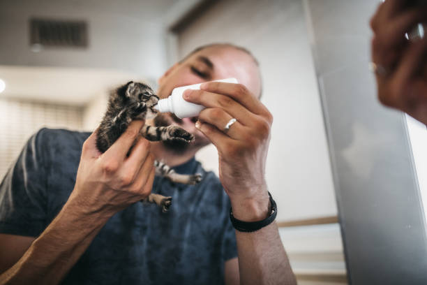
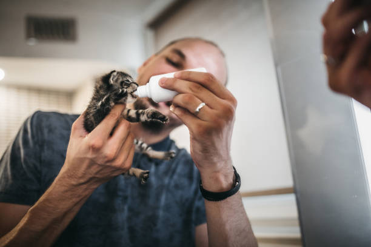

Changing Lives, One Rescue at a Time
Every animal deserves a loving home. Browse our rescued cats and dogs and make a difference today.
Our Mission
At Pawkalinga we rescue, rehabilitate, and rehome abandoned animals. We believe every paw matters and every life deserves a second chance. Join us in making a difference, one rescue at a time.
Rescue Story
Meet Dongdong, an Aspin who found his forever home last year after being rescued from the streets. When Dongdong was first found, he was malnourished, scared, and wary of people due to the harsh conditions he endured while fending for himself.
Through the compassion of volunteers, Dongdong was slowly nursed back to health—his wounds treated, his fur cleaned, and his trust in people rebuilt day by day. Despite his difficult past, Dongdong showed a playful spirit and a deep longing for affection.
Now, Dodong spends his days playing at the park and cuddling with his new family.
Rescue Story
When we found Inday, she was trembling under a parked car during a heavy downpour—cold, soaked to the bone, and clearly starving. Her eyes were filled with fear, and her tiny body was so thin you could feel every bone. It was clear she had been on her own for far too long.
With patience and gentle care, Inday was slowly brought into a warm, safe space. She was given proper food, a soft bed, and—most importantly—kindness.
Today, Inday is a picture of resilience. She's a curious, lively cat who loves sunbathing by the window, chasing toys, and curling up next to her humans at night. Her journey is a powerful reminder that even the most frightened souls can bloom when shown compassion
Life at the Shelter
 

Here are some snapshots from our recent collaboration with Pawtner Beyond Borders, a global animal rescue group. Join the cause, kabayan!